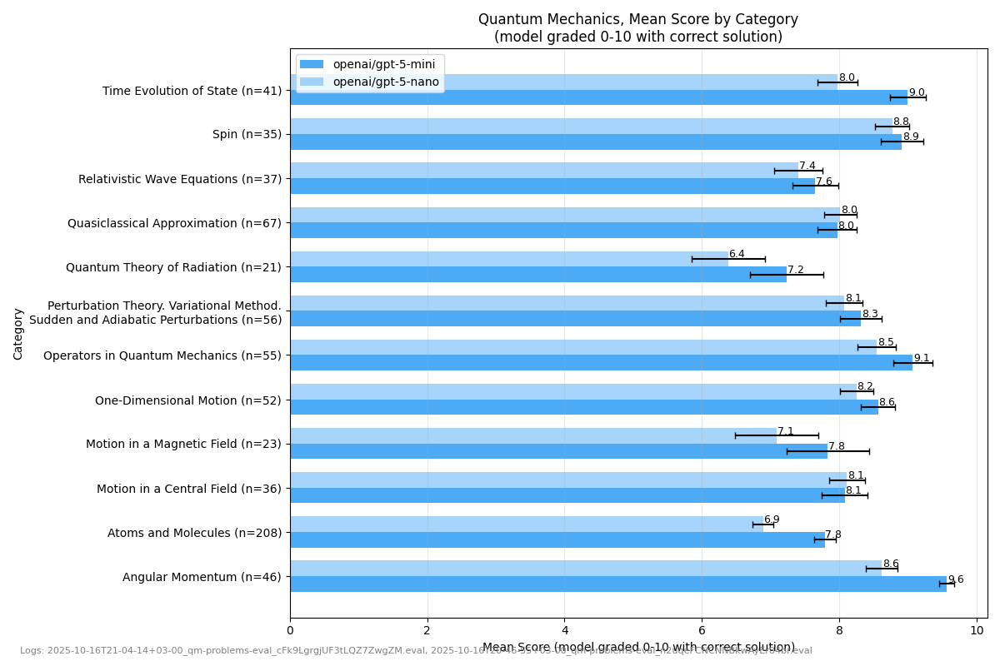
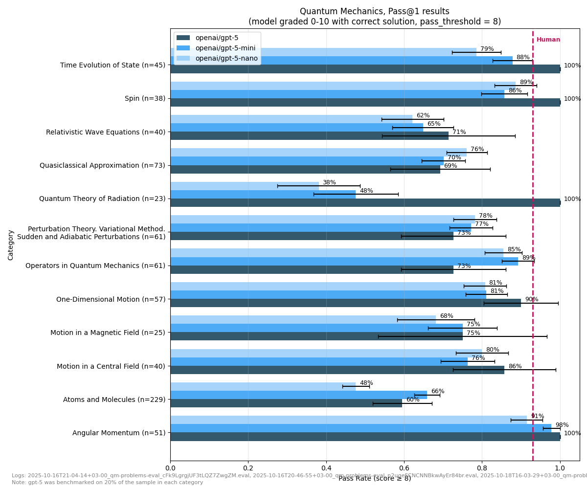
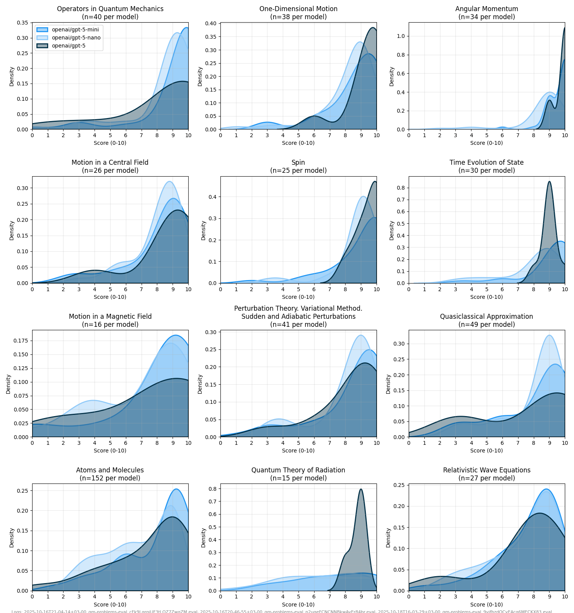

Timeline of Findings
TeorMinEval-Quantum v.1 first findings

Mean score by category analysis

Pass rate by category evaluation

Score distribution analysis by category
example of overfitting
For this practice problem in quantum mechanics:
Find the radiation of a finite system of charges with accuracy up to terms of order (1/c^5). Express it in terms of the system's electric dipole, quadrupole, and magnetic moments.

The original formulation of the problem
LLM shows incorrect solution:

LLM spots incorrect solution
This makes sense, because it is known that this problem is solved incorrectly in the book where LLM has overfitted from.